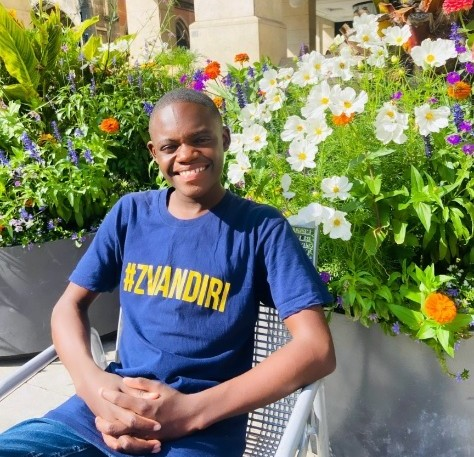
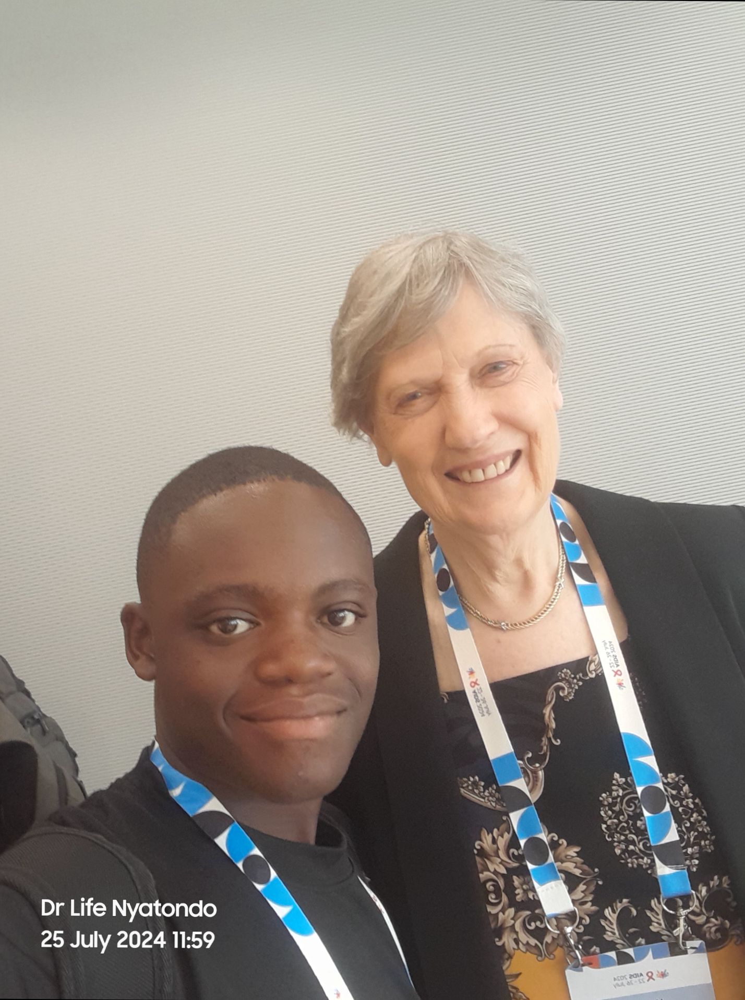

Explore custom software engineering systems, full-stack web applications, and global HIV, SRHR, and Mental Health advocacy initiatives.
 // FULL-STACK DEVELOPMENT
// FULL-STACK DEVELOPMENT
Official website and core platform built for TumaiLife Technologies Co., delivering custom software solutions, database architectures, and digital services.
 // REACT & SUPABASE
// REACT & SUPABASE
Engineered a web application featuring local offline data caching, real-time sync capabilities, and structured database schema policies with Supabase and Vite.
 // WEB DESIGN & DEPLOYMENT
// WEB DESIGN & DEPLOYMENT
Designed, customized, and deployed a modern personal portfolio website featuring custom UI components and smooth navigation.
 // BRANDING & WEB BUILD
// BRANDING & WEB BUILD
Custom web build focused on brand presentation, structured landing pages, and interactive media integration.

// PEER SUPPORT & MENTAL HEALTHDedicated Peer Supporter offering peer-led psychosocial care, HIV treatment adherence guidance, and mental health counseling for adolescents.
 // REGIONAL YOUTH ADVOCACY
// REGIONAL YOUTH ADVOCACY
Advocating under the READY Movement (readymovement.org) to empower resilient adolescents and young people living with HIV across Southern Africa.

// GLOBAL SUMMITParticipated in Munich, Germany as an IAS Change Maker and IAS Young Leader, presenting youth-focused HIV/SRHR intervention frameworks.
 // INTERNATIONAL DELEGATE
// INTERNATIONAL DELEGATE
Delegate and speaker addressing adolescent health challenges and peer support models in Gaborone, Botswana (October 2025).
 // POLICY & FUNDING ADVOCACY
// POLICY & FUNDING ADVOCACY
Advocated for equitable resource allocation, healthcare financing, and budget transparency for adolescent health services in Zimbabwe.